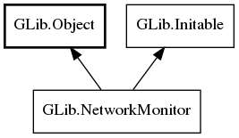

GLib.NetworkMonitor Reference Manual
Packages
gio-2.0
GLib
NetworkMonitor
network_available
get_default
can_reach
can_reach_async
get_network_available
network_changed
NetworkMonitor
Object Hierarchy:

Description:
public
interface
NetworkMonitor
:
Object
,
Initable
Namespace:
GLib
Package:
gio-2.0
Content:
Properties:
public
abstract
bool
network_available
{
get
; }
Static methods:
public
static
weak
NetworkMonitor
get_default
()
Methods:
public
abstract
bool
can_reach
(
SocketConnectable
connectable,
Cancellable
? cancellable =
null
)
throws
Error
public
abstract
async
bool
can_reach_async
(
SocketConnectable
connectable,
Cancellable
? cancellable =
null
)
throws
Error
public
bool
get_network_available
()
Signals:
public
virtual
signal
void
network_changed
(
bool
available)